20 Multiple Nominal Predictors
20.1 Crop Yield by Till Method and Fertilizer
The data in CalvinBayes::SplitPlotAgri are from an agricultural study in which
different tilling methods and different fertilizers were used and the crop yield (in
bushels per acre) was subsequently measured.
gf_point(Yield ~ Fert | ~ Till, data = SplitPlotAgri, alpha = 0.4, size = 4)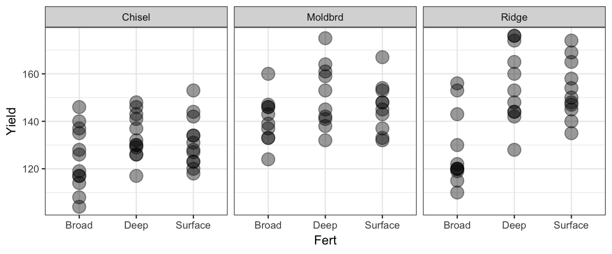
Here are two models. See if you can figure out what they are. (How can you use R to check if you are correct?)
- What parameters does each model have?
- Write a formula that describes the model. Be sure to clarify what the variables mean.
- How would you use each model to estimate the mean yield when using ridge tilling and deep fertilizer? (Imagine that you already have the posterior distribution in hand.)
fert1_brm <-
brm(Yield ~ Till + Fert, data = SplitPlotAgri)## Compiling the C++ model## Start samplingfert2_brm <-
brm(Yield ~ Till * Fert, data = SplitPlotAgri)## Compiling the C++ model## recompiling to avoid crashing R session## Start samplingIn each of these models, the response (yield) is normally distributed around a mean value that depends on the type of fertilizer and tilling method used:
\[\begin{align*} Y_i &\sim \mu_i + {\sf Norm}(0, \sigma) \\ Y_i &\sim {\ sf Norm}(\mu_i, \sigma) \end{align*}\]
In model 1, the two nominal predictors are converted into indicator variables:
\[\begin{align*} x_1 &= [\![ \mathrm{Till} = \mathrm{Moldbrd} ]\!] \\ x_2 &= [\![ \mathrm{Till} = \mathrm{Ridge} ]\!] \\ x_3 &= [\![ \mathrm{Fert} = \mathrm{Deep} ]\!] \\ x_4 &= [\![ \mathrm{Fert} = \mathrm{Surface} ]\!] \\ \end{align*}\]
So the model becomes (omitting the subscripted \(i\)):
\[\begin{align*} \mu &= \beta0 + \beta_1 x_1 + \beta_2 x_2 + \beta_3 x_3 + \beta_4 x_4 \\ &= \beta_0 + \beta_1 [\![ \mathrm{Till} = \mathrm{Moldbrd} ]\!] + \beta_2 [\![ \mathrm{Till} = \mathrm{Ridge} ]\!] \beta_3 [\![ \mathrm{Fert} = \mathrm{Deep} ]\!] + \beta_4 [\![ \mathrm{Fert} = \mathrm{Surface} ]\!] + \end{align*}\]
We can visualize this in a tabular form as
| Chisel | Moldbrd | Ridge | |
|---|---|---|---|
| Broad | \(\beta_0\) | \(\beta_0 + \beta_1\) | \(\beta_0 + \beta_2\) |
| Deep | \(\beta_0 + \beta_3\) | \(\beta_0 + \beta_1 + \beta_3\) | \(\beta_0 + \beta_2 + \beta_3\) |
| Surface | \(\beta_0 + \beta_4\) | \(\beta_0 + \beta_1 + \beta_4\) | \(\beta_0 + \beta_2 + \beta_4\) |
fert1_brm ## Family: gaussian
## Links: mu = identity; sigma = identity
## Formula: Yield ~ Till + Fert
## Data: SplitPlotAgri (Number of observations: 99)
## Samples: 4 chains, each with iter = 2000; warmup = 1000; thin = 1;
## total post-warmup samples = 4000
##
## Population-Level Effects:
## Estimate Est.Error l-95% CI u-95% CI Eff.Sample Rhat
## Intercept 120.34 2.92 114.71 126.08 3919 1.00
## TillMoldbrd 16.11 3.16 9.78 22.22 4368 1.00
## TillRidge 15.75 3.13 9.63 22.00 4408 1.00
## FertDeep 15.79 3.25 9.58 22.32 3877 1.00
## FertSurface 12.66 3.23 6.37 18.92 4352 1.00
##
## Family Specific Parameters:
## Estimate Est.Error l-95% CI u-95% CI Eff.Sample Rhat
## sigma 13.11 0.96 11.38 15.17 4394 1.00
##
## Samples were drawn using sampling(NUTS). For each parameter, Eff.Sample
## is a crude measure of effective sample size, and Rhat is the potential
## scale reduction factor on split chains (at convergence, Rhat = 1).Note that this model implies that the difference in yield between using two fertilizers is the same for each of the three tilling methods and the difference due to tilling methods is the same for each of the three fertilizers. This may not be a reasonable assumption. Perhaps some fertilizers work better with certain tilling methods than with others. Model 2 allows for this.
The interaction (Till * Fert) creates additional new variables of the form
\(x_i x_j\) where \(i = 1\) or \(2\) and \(j = 3\) or \(4\).
For example,
\[\begin{align*}
x_1 x_3 &=
[\![ \mathrm{Till} = \mathrm{Moldbrd} ]\!] \cdot
[\![ \mathrm{Fert} = \mathrm{Deep} ]\!] \\
& =
[\![ \mathrm{Till} = \mathrm{Moldbrd} \mathrm{\ and \ }
\mathrm{Fert} = \mathrm{Deep} ]\!]
\end{align*}\]
If we let \(\beta_{i:j}\) be the coefficient on \(x_i x_j\), then our table for \(\mu\) becomes
| Chisel | Moldbrd | Ridge | |
|---|---|---|---|
| Broad | \(\beta_0\) | \(\beta_0 + \beta_1\) | \(\beta_0 + \beta_2\) |
| Deep | \(\beta_0 + \beta_3\) | \(\beta_0 + \beta_1 + \beta_3 + \beta_{1:3}\) | \(\beta_0 + \beta_2 + \beta_3 + \beta_{2:3}\) |
| Surface | \(\beta_0 + \beta_4\) | \(\beta_0 + \beta_1 + \beta_4 + \beta_{1:4}\) | \(\beta_0 + \beta_2 + \beta_4 + \beta_{2:4}\) |
fert2_brm ## Family: gaussian
## Links: mu = identity; sigma = identity
## Formula: Yield ~ Till * Fert
## Data: SplitPlotAgri (Number of observations: 99)
## Samples: 4 chains, each with iter = 2000; warmup = 1000; thin = 1;
## total post-warmup samples = 4000
##
## Population-Level Effects:
## Estimate Est.Error l-95% CI u-95% CI Eff.Sample Rhat
## Intercept 124.41 3.64 117.16 131.52 1805 1.00
## TillMoldbrd 16.34 5.39 5.49 26.95 1930 1.00
## TillRidge 3.58 5.31 -6.77 13.69 1953 1.00
## FertDeep 9.36 5.12 -0.52 19.30 1799 1.00
## FertSurface 7.02 5.14 -3.14 16.84 2051 1.00
## TillMoldbrd:FertDeep 0.85 7.60 -14.19 15.72 1892 1.00
## TillRidge:FertDeep 18.15 7.50 3.61 32.73 2010 1.00
## TillMoldbrd:FertSurface -1.65 7.73 -16.86 13.63 2092 1.00
## TillRidge:FertSurface 18.22 7.54 3.63 32.96 1948 1.00
##
## Family Specific Parameters:
## Estimate Est.Error l-95% CI u-95% CI Eff.Sample Rhat
## sigma 12.68 0.93 10.97 14.62 2988 1.00
##
## Samples were drawn using sampling(NUTS). For each parameter, Eff.Sample
## is a crude measure of effective sample size, and Rhat is the potential
## scale reduction factor on split chains (at convergence, Rhat = 1).In this model, there is are no dependencies among the various group means and the interaction parameters (\(\beta_{i:j}\)) are a measure of how much this mattered. (If they are close to 0, then this will be very much like the additive model.)
As before, we can opt to fit the model without an intercept. This produces a different parameterization of the same model.
fert2a_brm <-
brm(Yield ~ 0 + Till * Fert, data = SplitPlotAgri)## Compiling the C++ model## Start samplingfert2a_brm## Family: gaussian
## Links: mu = identity; sigma = identity
## Formula: Yield ~ 0 + Till * Fert
## Data: SplitPlotAgri (Number of observations: 99)
## Samples: 4 chains, each with iter = 2000; warmup = 1000; thin = 1;
## total post-warmup samples = 4000
##
## Population-Level Effects:
## Estimate Est.Error l-95% CI u-95% CI Eff.Sample Rhat
## TillChisel 124.30 3.63 116.91 131.25 2135 1.00
## TillMoldbrd 140.69 4.08 132.48 148.83 3586 1.00
## TillRidge 127.91 3.89 120.12 135.76 3592 1.00
## FertDeep 9.49 5.15 -0.27 19.36 2215 1.00
## FertSurface 7.05 5.04 -2.96 17.07 2094 1.00
## TillMoldbrd:FertDeep 0.72 7.54 -13.92 15.97 2274 1.00
## TillRidge:FertDeep 18.00 7.57 2.91 33.12 2481 1.00
## TillMoldbrd:FertSurface -1.75 7.66 -16.69 13.25 2497 1.00
## TillRidge:FertSurface 18.29 7.56 3.52 33.26 2357 1.00
##
## Family Specific Parameters:
## Estimate Est.Error l-95% CI u-95% CI Eff.Sample Rhat
## sigma 12.70 0.96 11.02 14.74 3748 1.00
##
## Samples were drawn using sampling(NUTS). For each parameter, Eff.Sample
## is a crude measure of effective sample size, and Rhat is the potential
## scale reduction factor on split chains (at convergence, Rhat = 1).20.1.1 What does \(\sigma\) represent?
In each of these models, \(\sigma\) is the standard deviation of yield for all plots (not just those in our data) with a given combination of fertilizer and tilling method. These models specify that the standard deviation is the same in each of these groups (but we could modify that assumption and estimate separate standard deviations in each group if we wanted). The estimate of \(\sigma\) is a bit smaller for the model with interaction because the added flexibility of the model allows us to estimate the means more flexibly.
20.2 Split Plot Design
There is a bit more to our story. The study used 33 different fields. Each field was divided into 3 sections and a different fertilizer was applied to each of the three sections. (Which fertilizer was used on which section was determined at random.) This is called a “split-plot design” (even if it is applied to things that are not fields of crops).
It would have been possible to divide each field into 9 sub-plots and use all combinations of tilling and fertilizer, but that’s not how this study was done. The tilling method was the same for the entire field – likely because it was much more efficient to plow the fields this way.
The plot below indicates that different fields appear to have different baseline yields since the dots associated with one field tend to be near the top or bottom of each of the fertilizer clusters. We can add an additional variable to our model to handle this situation.
gf_point(Yield ~ Fert | ~ Till, data = SplitPlotAgri, alpha = 0.4, size = 4) %>%
gf_line(group = ~Field)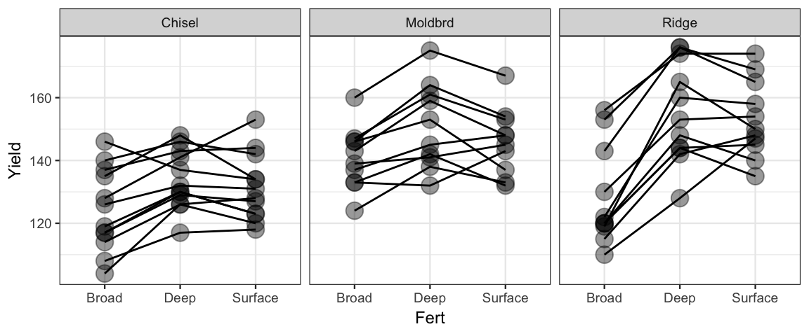
fert3_brm <-
# the use of factor() is important here because the field ids are numbers
# factor converts this into a factor (ie, a nominal variable)
brm(Yield ~ Till * Fert + factor(Field), data = SplitPlotAgri)## Compiling the C++ model## recompiling to avoid crashing R session## Start sampling## Warning: There were 3999 transitions after warmup that exceeded the maximum treedepth. Increase max_treedepth above 10. See
## http://mc-stan.org/misc/warnings.html#maximum-treedepth-exceeded## Warning: Examine the pairs() plot to diagnose sampling problemsfert3_brm## Warning: The model has not converged (some Rhats are > 1.1). Do not analyse the results!
## We recommend running more iterations and/or setting stronger priors.## Family: gaussian
## Links: mu = identity; sigma = identity
## Formula: Yield ~ Till * Fert + factor(Field)
## Data: SplitPlotAgri (Number of observations: 99)
## Samples: 4 chains, each with iter = 2000; warmup = 1000; thin = 1;
## total post-warmup samples = 4000
##
## Population-Level Effects:
## Estimate Est.Error l-95% CI u-95% CI Eff.Sample Rhat
## Intercept 118.99 4.53 110.76 127.55 3 2.22
## TillMoldbrd 136.86 7252.75 -15054.17 11917.89 2 5.44
## TillRidge 828.01 5320.89 -9049.31 9955.85 3 3.66
## FertDeep 9.37 2.23 5.28 13.93 26 1.14
## FertSurface 6.84 2.41 2.04 11.50 11 1.25
## factorField2 14.68 5.70 3.76 24.68 4 1.68
## factorField3 17.62 5.23 6.40 26.65 6 1.51
## factorField4 5.85 5.10 -3.66 16.34 9 1.33
## factorField5 16.39 5.07 5.70 25.33 4 1.61
## factorField6 -1.29 5.27 -11.90 7.74 6 1.47
## factorField7 -7.73 5.35 -17.63 2.99 9 1.55
## factorField8 -9.51 5.23 -18.75 0.37 7 1.37
## factorField9 -0.09 4.62 -9.50 9.01 9 1.35
## factorField10 17.14 4.92 7.80 27.02 5 1.53
## factorField11 14.47 5.42 3.85 24.99 11 1.38
## factorField12 -1.82 5.70 -13.58 8.55 5 1.51
## factorField13 -111.31 7254.43 -11890.83 15083.34 2 5.44
## factorField14 -106.52 7254.44 -11883.23 15091.71 2 5.44
## factorField15 -125.17 7254.41 -11902.10 15070.68 2 5.44
## factorField16 -93.91 7254.40 -11873.31 15102.90 2 5.44
## factorField17 -117.99 7254.51 -11895.74 15076.08 2 5.44
## factorField18 -125.60 7254.47 -11899.57 15070.78 2 5.44
## factorField19 -115.92 7254.49 -11893.10 15077.36 2 5.44
## factorField20 -107.70 7254.43 -11880.38 15087.11 2 5.44
## factorField21 -129.63 7254.43 -11906.67 15065.57 2 5.44
## factorField22 -119.58 7254.46 -11896.83 15077.46 2 5.44
## factorField23 -829.25 5320.12 -9957.87 9041.24 3 3.66
## factorField24 -796.29 5320.26 -9924.95 9070.10 3 3.66
## factorField25 -827.91 5320.23 -9956.23 9034.72 3 3.66
## factorField26 -835.91 5320.19 -9967.37 9032.79 3 3.66
## factorField27 -818.54 5320.23 -9947.83 9051.39 3 3.66
## factorField28 -819.45 5320.23 -9947.22 9049.76 3 3.66
## factorField29 -831.15 5320.22 -9958.66 9034.40 3 3.66
## factorField30 -828.15 5320.24 -9954.33 9038.14 3 3.66
## factorField31 -801.45 5320.24 -9935.83 9069.36 3 3.66
## factorField32 -817.45 5320.35 -9952.94 9051.22 3 3.66
## factorField33 -799.54 5320.22 -9929.25 9069.07 3 3.66
## TillMoldbrd:FertDeep 1.29 3.33 -5.63 7.62 32 1.15
## TillRidge:FertDeep 17.63 3.56 10.70 24.88 54 1.06
## TillMoldbrd:FertSurface -1.15 3.48 -7.92 5.82 26 1.18
## TillRidge:FertSurface 17.86 3.38 11.28 24.54 21 1.17
##
## Family Specific Parameters:
## Estimate Est.Error l-95% CI u-95% CI Eff.Sample Rhat
## sigma 5.80 0.57 4.75 7.04 45 1.05
##
## Samples were drawn using sampling(NUTS). For each parameter, Eff.Sample
## is a crude measure of effective sample size, and Rhat is the potential
## scale reduction factor on split chains (at convergence, Rhat = 1).That’s a lot of output. And the model is performing badly. Fortunately, we don’t really want this model anyway. We now have a an adjustment for each field, and there were 33 fields. But we are not really interested in predicting the yield for a given field. Our primary interest is in which fertilizers and tilling methods work well. We hope our results apply generally to all fields. So field field plays a different role in this study. We are only comparing 3 fertilizers and 3 tilling methods, but there are many more fields than the 33 in our study. They are intended to be representative of all fields (and their variable quality for producing large yields).
If we think that field quality might be described by a normal distribution (or
some other distribution), we might be more interested in the parameters of that
distribution than in the specific estimates for the particular fields in this
study. The kind of model we want for this is called a hierarchical or multi-level model, and brm() makes it easy to describe such a model.
Here’s a way to think about such a model
- Each field has a baseline productivity.
- The baseline productivities are normal with some mean and standard deviation that tell us about the distribution of productivity among fields. Our 33 fields should helps us estimate this distribution.
- That baseline productivity can be adjusted up or down depending on the tilling method and fertilizer used.
In brm() lingo, the effect of field is to adjust the intercept, so we can write
it like this:
fert4_brm <-
brm(Yield ~ Till * Fert + (1 | Field), data = SplitPlotAgri)## Compiling the C++ model## Start samplingWe can see in the output below that the variability from plot to plot is
estimated by a standard deviation of roughly 8 to 15. Individual field
estimates are hidden in this report, but you can see them if you type
stanfit(fert_brm).
fert4_brm## Family: gaussian
## Links: mu = identity; sigma = identity
## Formula: Yield ~ Till * Fert + (1 | Field)
## Data: SplitPlotAgri (Number of observations: 99)
## Samples: 4 chains, each with iter = 2000; warmup = 1000; thin = 1;
## total post-warmup samples = 4000
##
## Group-Level Effects:
## ~Field (Number of levels: 33)
## Estimate Est.Error l-95% CI u-95% CI Eff.Sample Rhat
## sd(Intercept) 11.70 1.73 8.82 15.49 777 1.00
##
## Population-Level Effects:
## Estimate Est.Error l-95% CI u-95% CI Eff.Sample Rhat
## Intercept 124.09 3.75 116.87 131.76 764 1.00
## TillMoldbrd 16.77 5.73 4.92 28.11 817 1.00
## TillRidge 3.85 5.47 -7.03 14.83 853 1.00
## FertDeep 9.55 2.26 5.20 14.06 2154 1.00
## FertSurface 7.22 2.30 2.61 11.67 1975 1.00
## TillMoldbrd:FertDeep 0.68 3.44 -5.98 7.46 2254 1.00
## TillRidge:FertDeep 17.90 3.33 11.43 24.28 2162 1.00
## TillMoldbrd:FertSurface -2.04 3.43 -8.69 4.75 2136 1.00
## TillRidge:FertSurface 17.98 3.29 11.39 24.24 2167 1.00
##
## Family Specific Parameters:
## Estimate Est.Error l-95% CI u-95% CI Eff.Sample Rhat
## sigma 5.69 0.53 4.75 6.84 1743 1.00
##
## Samples were drawn using sampling(NUTS). For each parameter, Eff.Sample
## is a crude measure of effective sample size, and Rhat is the potential
## scale reduction factor on split chains (at convergence, Rhat = 1).The three groupings of the parameters shows are
group-level effects
This is where we find the standard deviation associated with
Field. We are interested in the fields as a group, not as individual fields.population-level effects
The parameters for
TillandFertgo here.family specific
This is where we find parameters associated with the “noise” of the model, in this case the standard deviation of the normal distribution. If we used a t-distribution, we would find
nuandsigmahere.
20.3 Which model should we use?
20.3.1 Modeling Choices
Now that we are able to create more and more kinds of models, model selection is going to become a bigger issue. Here are just some of the choices we now have when constructing a model.
What variables?
If our primary goal is to study the association between the response and certain predictor variables, we need to include those variables in the model.
But additional variables can be helpful if they explain some of the variation in the response variable in a way that makes it easier to see the association with the variables of interest.
Since we have information about fields, and it seems plausible that productivity varies by field, we prefer models include
Field. Similarly, even if we were only intersted in one of fertilizer or tilling method, it may be useful to include both.We might wish for some additional variables for our study of crop yields. Perhaps knowing additional information about the fields (soil type, hilly or flat? water shed or water basin? previous years crop, etc.). Any of these things might help explain the variation from field to field.
But adding too many variables can actually make this worse!
If variables are correlated in our data (colinearity of predictors), including both will usually make our posterior distributions for the associated parameters much wider.
Additional variables can lead to over-fitting. Additional variables will always make our model fit the current data set better, but eventually we will begin fitting the idiosyncracies of our particular data set rather than patterns that are likely to extend to new observations.
Interaction terms?
When we use more than one predictor, we need to decide whether to include interaction terms. Interaction is important to include if we are open to to the possibility that the “effect” of one variable on the response may depend on the value of some other variable.
Noise distribution?
Normal distributions are traditional and relatively easy to interpret. T distributions are more robust against unusual observations or heavy tailed distributions. Both of these are symmetric distributions. If we expect or see evidience of a lack of symmetry, we may need to use transformations of the data or other families of distributions.
What priors?
Bayesian inference adds another layer: prior selection. For most of our models we have used “weakly informed priors”. These priors avoid parameter values that are impossible (negative values for standard deviations, for example) and provide crude order-of-magnitude guidance. They can also serve a mild regularizing effect (shrinking parameter estimates toward 0, for example, to counter against over fitting). If more information is available, it is possible to use more informed priors.
Choice of prior matters more for small data sets than for large data sets. This makes sense both mathematically and intuitively. Intiuitively, if we don’t have much new data, it won’t change our beliefs much from what they were before. But if we have a lot of data, we will come to roughly the same conclusion no matter what we believed before.
Multi-level?
Are the values of nominal variables in our data exhaustive of the possibilities (or of our interests)? Or are they just representative of a larger set of possible values? In the latter case, a multi-level model may be called for.
To clarify this, it can be good to imagine expanding the data set. If you were to collect additional data, would the variables take on new values? In our crop yield study, adding more data would require using new fields, but we could still use the same three fertilizers and same three tilling methods. Furthermore, the three tilling methods selected are not likely representative of some distribution of tilling methods the way the fields studied might be representative of many fields in a given region.
These are only some of the questions we need to answer when constructing a model. But how do we decide? Part of the decision is based on things we know or believe in advance. Our model may be designed to reflect a theory about how data are generated or may be informed by other studies that have been done in similar situations. But there are also ways to investigate and compare models.
20.3.2 Measuring a Model – Prediction Error
20.3.2.1 Prediction vs. Observation
One way to measure how well a model is working is to compare the predictions the model makes for the response variable \(\hat y_i\) to the observed response values in the data \(y_i\). To simplify things, we would like to convert these \(n\) predictions and \(n\) observations into a single number.
If you have taken a statistics course before, you may have done this using Sum of Squared Errors (SSE) or Mean Squared Error (MSE).
\[\begin{align*} SSE & = \sum_{i = 1}^n (y_i - \hat y_i)^2 \\ MSE & = \frac{1}{n} SSE = \frac{1}{n} \sum_{i = 1}^n (y_i - \hat y_i)^2 \end{align*}\]
If you are familiar with \(r^2\), it is related to MSE:
\[\begin{align*} SSE &= \sum_{i = 1}^n (y_i - \hat y_i)^2 \\ SST &= \sum_{i = 1}^n (y_i - \overline{y})^2 \\ r^2 &= 1 - \frac{SSE}{SST} \end{align*}\]
We are working with Bayesian models, so \(SSE\), \(MSE\) and \(r^2\) have posterior distributions, since they depend on (the posterior distribution of) \(\theta\). Each posterior value of \(\theta\) leads to a value of \(\hat y_i = E(y_i \mid \theta)\) and that in turn leads to a values of \(SSE\), \(MSE\), and \(r^2\).
Putting that all together to highlight the dependence on \(\theta\), we get
\[MSE = \frac{1}{n} \sum_{i = 1}^n (y_i - E(y_i \mid \theta))^2\]
The intuition behind all three quantities is that model fit can be measured by how close the model prediction \(\hat y_i\) is to the obsered resopnse \(y_i\). \(MSE\) adjusts for sample size to make it easier to compare values across data sets of different sizes. \(r^2\) makes a further normalization to put things on a 0-1 scale. (1 is a perfect fit. 0 means the model always gives the same prediction, so it isn’t doing anything useful.)
20.3.2.2 (Log) predictive density
Another option is to compute log predictive density (lpd):
\[\mathrm{lpd}(\theta; y) = \log p(y \mid \theta)\]
Once again, \(y\) is fixed, so this is a function of \(\theta\). In fact, it is just the log likelihood function. For a given value of \(\theta\), lpd measures (on a log scale) the probability of observing the data. A larger value indicates a better fit. Once again, because lpd is a function of \(\theta\), it also has a posterior distribution.
Assuming that the values of \(y\) are independent given the parameters (and the predictor values \(x\)), this can be written as
\[ \mathrm{lpd}(\theta; y) = \log p(y \mid \theta) = \log \prod_{i = 1}^n p(y_i \mid \theta) = \sum_{i = 1}^n \log p(y_i \mid \theta) \]
In this case, we can compute the log posterior density pointwise and add. In practice, this is often done even when independence does not hold. So technically we are working with log pointwise posterior density:
\[ \mathrm{lppd}(\theta; y) = \sum_{i = 1}^n \log p(y_i \mid \theta) \] As with \(SSE\), \(MSE\), and \(r^2\) this assigns a score to each \(i\) and then sums over those scores.
For linear models with normal noise and uniform priors, lpd is proportional to \(MSE\) (and to \(SSE\)).1
20.3.2.3 Predictors
In the notation above, we have been hiding the role of predictors \(x\) (and we will continue to do so below). A model with predictors makes different predictions depending on the vaules of the predictors. In all our examples, \(x\) will be fixed, but we could include it in the notation if we wanted. For example,
\[ \mathrm{lpd}(\theta; y, x) = \log p(y \mid \theta, x) \]
20.3.2.4 Numbers from distributions
We can convert a measure \(\mathrm{lpd}(\theta; y)\), which depends on \(\theta\), into a single number in several ways. We will illustrate below
- We could replace \(\theta\) with a particular number \(\hat \theta\). (\(\hat \theta\) might be the mean, median, or mode of the posterior distribution or the mode of the likelihood function, for example). If we do this we get the number
\[ \mathrm{lpd}(\hat \theta; y) = \log p(y \mid \hat\theta) = \sum_{i = 1}^n \log p(y_i \mid \theta) \] This is sometimes called a “plug-in” estimate since we are plugging in a single number for \(\theta\).
- Instead of summarizing \(\theta\) with a single number, we could summarize \(p(y_i \mid \theta)\) with a single number by averaging over the posterior sample values \(p(y_i \mid \theta^s)\). (\(\theta^s\) denotes the value of \(\theta\) in row \(s\) of our \(S\) posterior samples.) If sum over \(i\), we get the log pointwise posterior density (lppd):
\[\begin{align} \mathrm{lppd} &\approx \sum_{i = 1}^n \log \left( \frac{1}{S} \sum_{s = 1}^S p(y_i \mid \theta^s)\right) \end{align}\]
This is an approximation because our poseterior samples are only an approximation to the true posterior distribution. But if the effective sample size of the posterior is large, this approximation should be very good.
Unfortunately, both of these measures (\(MSE\) and log predictive density) have a problem. They measure how well the model fits the data used to fit the model, but we are more interested in how well the model might fit new data (generated by the same random process that generated the current data). This leads to overfitting and prefers larger, more complex models, since the extra flexibility of these models makes it easier for them to “fit the data”.
20.3.3 Out-of-sample prediction error
More interesting would be to measure how well the models would fit new data. This is referred to as out-of-sample prediction, in contrast to in-sample prediction.
So let’s consider how well our model predicts new data \(\tilde y\) rather than the observed data \(y\):
\[ \mathrm{lpd}(\theta; \tilde y) = \log p(\tilde y \mid \theta) = \log \prod_{i = 1}^n p(\tilde y_i \mid \theta) = \sum_{i = 1}^n \log p(\tilde y_i \mid \theta) \]
which we can convert into a single number by plugging by posterior averaging:
And since \(\tilde y\) is not fixed (like \(y\) was), we take an additional step and compute the expected value (average) of this quantity over the distribution of \(\tilde y_i\) to get the expected log (pointwise) predictive density for a new response \(\tilde y_i\):2
\[ \mathrm{elppd} = \mathrm{E}\left(\sum_{i = 1}^n \log p_{\mathrm{post}}(\tilde y_i)\right) \approx \sum_{i = 1}^n \mathrm{E}\left(\log \frac{1}{S} \sum_{s = 1}^S p(\tilde y_i \mid \theta^s))\right) \]
This expected value is taken over the true distribution of \(\tilde y_i\) (which is a problem, stay tuned.)
20.3.4 Approximating out-of-sample prediction error
What we would ideally want (elppd), we cannot compute since it requires us to know the distribution of out-of-sample data (\(\tilde y_i\)). This leads us to the following impossible set of goals for our ideal measure of model (predictive) performance (borrowed from (Gelman, Hwang, and Vehtari 2014)):
- an unbaised and accurate measure
- of out-of-sample prediction error (elppd)
- that will be valid over a general class of models,
- and that requires minimal computation beyond that need to fit the model in the first place.
Here are three approaches to solving this problem
Use within-sample predictive accuracy.
But this isn’t ideal since it overestimates performace of the model (and more so for more complicated models).
Adjust within-sample predictive accuracy.
Within-sample predictive accuracy will over-estimate out-of-sample predictive accuracy. If we knew (or could estimate) by how much, we could adjust by that amount to eliminate (or reduce) the bias. Quantities like AIC (Aikeke’s information criterion), DIC (deviance information criterion), and WAIC (widely applicable information criterion) take the approach of substracting something from lppd that depends on the complexity of the model.
Use cross-validation
The main idea here is to use some of the data to fit the model and the rest of the data to evaluate prediction error. This is a poor person’s version of “out-of-sample”. We will focus on leave one out (LOO) cross validation where we fit the model \(n\) times, each time leaving out one row of the data and using the resulting model to predict the removed row. If we really needed to recompute the model \(n\) times, this would be too computationally expensive for large data sets and complex models. But there are (more) efficient approximations to LOO-cv that make it doable. They are based on the idea that the posterior distribution using \(y(-i)\) (all but row \(i\) of the data) should usually be similar to the posterior distribution using \(y\) (all of the data). So we can recycle the work done to compute our original posterior. The result is only an approximation, and it doesn’t always work well, so sometimes we have to recreate the posterior from scratch, at least for some of the rows.
The formulas for estimated out-of-sample predictive density
\[\begin{align*} \widehat{\mathrm{elppd}}_{\mathrm{AIC}} &= \mathrm{lpd}(\hat\theta_{\mathrm{mle}}, y) - p_{\mathrm{AIC}} \\ \widehat{\mathrm{elppd}}_{\mathrm{DIC}} &= \mathrm{lpd}(\hat\theta_{\mathrm{Bayes}}, y) - p_{\mathrm{DIC}} \\ \widehat{\mathrm{elppd}}_{\mathrm{WAIC}} &= \mathrm{lppd} - p_{\mathrm{WAIC}} \\ \widehat{\mathrm{elppd}}_{\mathrm{LOO}} &= \sum_{i=1}^n \log p_{\mathrm{post}(-i)}(y_i) \approx \sum_{i=1}^n \log \left( \frac{1}{S} \sum_{s = 1}^S p(y_i \mid \theta^{is})\right) \end{align*}\]
and the associated effictive number of parameters:
\[\begin{align*} p_{\mathrm{AIC}} &= \mbox{number of parameters in the model}\\ p_{\mathrm{DIC}} &= 2 \mathrm{var}_{\mathrm{post}}(\log p(y \mid \theta)) \\ p_{\mathrm{WAIC}} &= 2 \mathrm{var}_{\mathrm{post}}(\sum_{i = 1}^n \log p(y_i \mid \theta)) \\ p_{\mathrm{LOO}} &= \hat{\mathrm{llpd}} - \hat{\mathrm{llpd}}_{\mathrm{LOO}} \\ \end{align*}\]
Notes
\(\theta^{is}\) is the value of \(\theta\) in row \(s\) of the posterior distribution when row \(i\) has been removed from the data. What makes LOO practical is that this can be approximated without refitting the model \(n\) times.
AIC and DIC differ from WAIC and LOO in that they use a point estimate for \(\theta\) (the maximum likelihood estimate for AIC and the mode of the posterior distribution for DIC) rather than using the full posterior distribution.
AIC penalizes a model 1 for each parameter. This is correct for linear models with normal noise and uniform priors, but is not correct in general. You can think of DIC and WAIC as estimating the effective number of parameters by looking at how much variation there is in \(\log(p(y_i \mid \theta))\). The more this quantity changes with changes in \(\theta\), the more flexible the model is (and the more it should be penalized).
LOO doesn’t work by adusting for an estimated number of parameters; it attempts to estimate elppd directly. But we can reverse engineer things to get an estimated number of parameters by taking the difference between the (estimated) within-sample and out-of-sample predictive density.
LOO and WAIC are assymptotically equivalent (that is they give more and more similar values as the sample size increases), but LOO typically performs a bit better on small data sets, so the authors of the loo package recommend LOO over WAIC as the go-to measure for comparing models.
Historically, information criteria have been expressed on the “devaiance scale”. To convert from log predictive density scale to deviance scale, we multiply by -2. On the deviance scale, smaller is better. On the log predictive density scale, larger is better (but the values are usually negative.) The
waic()andloo()functions compute both values.The output from
loo()andwaic()labels things elpd rather than elppd.
20.4 Using loo
The loo package provides functions for computing WAIC and LOO estimates of epld (and their information criterion counterparts). While the definitions are a bit involved, using WAIC or LOO to compare models is relatively easy. WAIC can be faster, but LOO performs better (according to the authors of the loo package).
library(loo)
waic(fert4_brm)##
## Computed from 4000 by 99 log-likelihood matrix
##
## Estimate SE
## elpd_waic -331.1 7.5
## p_waic 30.7 3.9
## waic 662.1 15.0## Warning: 21 (21.2%) p_waic estimates greater than 0.4. We recommend trying loo instead.loo(fert4_brm)## Warning: Found 8 observations with a pareto_k > 0.7 in model 'fert4_brm'. It is recommended to set
## 'reloo = TRUE' in order to calculate the ELPD without the assumption that these observations are
## negligible. This will refit the model 8 times to compute the ELPDs for the problematic observations
## directly.##
## Computed from 4000 by 99 log-likelihood matrix
##
## Estimate SE
## elpd_loo -335.1 8.1
## p_loo 34.7 4.5
## looic 670.2 16.2
## ------
## Monte Carlo SE of elpd_loo is NA.
##
## Pareto k diagnostic values:
## Count Pct. Min. n_eff
## (-Inf, 0.5] (good) 64 64.6% 616
## (0.5, 0.7] (ok) 27 27.3% 167
## (0.7, 1] (bad) 8 8.1% 34
## (1, Inf) (very bad) 0 0.0% <NA>
## See help('pareto-k-diagnostic') for details.Sometimes the LOO-PSIS (Pareto-smoothed importance sampling) approximation
method doesn’t work well and loo() recommends refitting some of the models
from scratch. This is based on the shape parameter (k) of the Pareto distribution
used to smooth the tails of the posterior.
Let’s allow loo() to run from scratch the models it thinks need it.
(This is still much faster than refitting a model for each row of the
data since we only start from scratch a small number of times. And we don’t
need to recompile the model, since that doesn’t change; we just need to
generate posterior samples using a different data set.)
If there are quite a number of these, loo() will suggest k-fold cross-validation
instead of leave-one-out cross-validation. These leaves out multiple rows of
data from each refit. Since there are fewer models this way, it can exchange speed
for accuracy.
fert4_loo <- loo(fert4_brm, reloo = TRUE) # refit as necessary## 8 problematic observation(s) found.
## The model will be refit 8 times.##
## Fitting model 1 out of 8 (leaving out observation 15)##
## Fitting model 2 out of 8 (leaving out observation 19)##
## Fitting model 3 out of 8 (leaving out observation 31)##
## Fitting model 4 out of 8 (leaving out observation 57)##
## Fitting model 5 out of 8 (leaving out observation 77)##
## Fitting model 6 out of 8 (leaving out observation 82)##
## Fitting model 7 out of 8 (leaving out observation 83)##
## Fitting model 8 out of 8 (leaving out observation 87)## Start sampling
## Start sampling
## Start sampling
## Start sampling
## Start sampling
## Start sampling
## Start sampling
## Start samplingIn this case, things didn’t change that much when refitting the six “bad” models.
fert4_loo##
## Computed from 4000 by 99 log-likelihood matrix
##
## Estimate SE
## elpd_loo -335.3 8.2
## p_loo 34.9 4.6
## looic 670.6 16.4
## ------
## Monte Carlo SE of elpd_loo is 0.3.
##
## Pareto k diagnostic values:
## Count Pct. Min. n_eff
## (-Inf, 0.5] (good) 72 72.7% 34
## (0.5, 0.7] (ok) 27 27.3% 167
## (0.7, 1] (bad) 0 0.0% <NA>
## (1, Inf) (very bad) 0 0.0% <NA>
##
## All Pareto k estimates are ok (k < 0.7).
## See help('pareto-k-diagnostic') for details.plot(fert4_loo)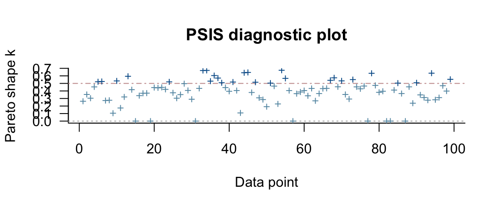
fert4a_loo <- loo(fert4_brm)## Warning: Found 8 observations with a pareto_k > 0.7 in model 'fert4_brm'. It is recommended to set
## 'reloo = TRUE' in order to calculate the ELPD without the assumption that these observations are
## negligible. This will refit the model 8 times to compute the ELPDs for the problematic observations
## directly.plot(fert4a_loo)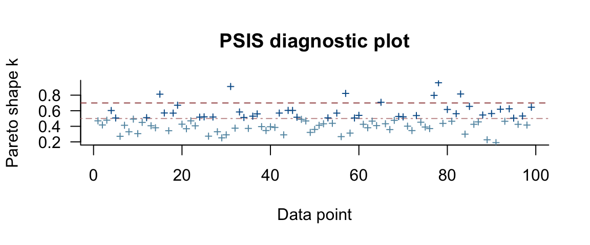
If we have multiple models, we can use loo::compare() to compare them based on
WAIC or LOO. Before doing that, let’s add one more model to our list.
fert5_brm <-
brm(Yield ~ Till + Fert + (1 | Field), data = SplitPlotAgri)## Compiling the C++ model## recompiling to avoid crashing R session## Start samplinglibrary(loo)
compare(
waic(fert1_brm),
waic(fert2_brm),
waic(fert4_brm),
waic(fert5_brm)
)fert1_loo <- loo(fert1_brm)
fert2_loo <- loo(fert2_brm)
fert5_loo <- loo(fert5_brm) ## Warning: Found 1 observations with a pareto_k > 0.7 in model 'fert5_brm'. It is recommended to set
## 'reloo = TRUE' in order to calculate the ELPD without the assumption that these observations are
## negligible. This will refit the model 1 times to compute the ELPDs for the problematic observations
## directly.Now we can compare our four models using LOO:
compare(fert1_loo, fert2_loo, fert4_loo, fert5_loo)| elpd_diff | se_diff | elpd_loo | se_elpd_loo | p_loo | se_p_loo | looic | se_looic | |
|---|---|---|---|---|---|---|---|---|
| fert4_loo | 0.00 | 0.000 | -335.3 | 8.222 | 34.933 | 4.5779 | 670.6 | 16.44 |
| fert5_loo | -23.75 | 6.290 | -359.0 | 7.618 | 29.254 | 3.7416 | 718.1 | 15.24 |
| fert2_loo | -61.26 | 7.818 | -396.5 | 5.940 | 9.258 | 1.0882 | 793.1 | 11.88 |
| fert1_loo | -62.37 | 8.145 | -397.7 | 5.598 | 5.460 | 0.6145 | 795.3 | 11.20 |
Important things to remember:
Estimated elpd and information criteria are not meaningful on their own, they are only useful for comparisons.
Comparisons can only be made among models that are fit using the same data since the computed values depend on both the model and the data.
All of these methods are approximate.
loo()andwaic()provide standard errors as well as estimates. Use those to help determine whether differences between models are meaningful or not.p_loo(effective number of parameters) is also an interesting measure. If this estimate does not seem to correspond to roughly the number of free parameters in your model, that is usually a sign that something is wrong. (Perhaps the model is mis-specified.) Keep in mind that multi-level models or models with strong priors place some restrictions on the parameters. This can lead to an effective number of parameters that is smaller than the actual number of parameters.This is only one aspect of how a model is performing. There may be good reasons to prefer a model with lower (estimated) log predictive density. Posterior predictive checks, theory, interpretability, etc. can all be part of deciding which models are better. But these methods can help us avoid selecting models that only look good because they are overfitting.
Note: Sometimes the best solution is to create a new model that combines elements from models tried along the way.
Beware of “model hacking.” If you try enough models, you might stumble across something. But it might not be meaningful. Choose models with some thought, don’t just keep trying models in hopes that one of them will produce something interesting.
20.5 Overfitting Example
20.5.1 Brains Data
This small data set giving the brain volume (cc) and body mass (kg) for several species. It is used to illustrate a very bad idea – improving the “fit” by increasing the degree of the polynomial used to model the relationship between brain size and body mass.
Brains <-
data.frame(
species = c("afarensis", "africanus", "habilis", "boisei",
"rudolfensis", "ergaster", "sapiens"),
brain_size = c(438, 452, 612, 521, 752, 871, 1350),
body_mass = c(37.0, 35.5, 34.5, 41.5, 55.5, 61.0, 53.5)
)
gf_point(brain_size ~ body_mass, data = Brains,
size = 2, color = "red", alpha = 0.6, verbose = TRUE) %>%
gf_text(brain_size ~ body_mass, label = ~species, alpha = 0.8,
color = "navy", size = 3, angle = 30)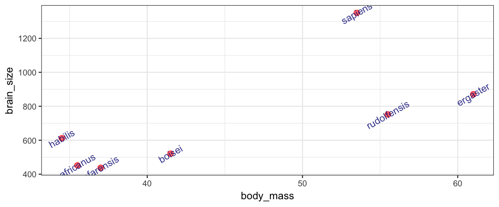
To speed things up for this illustration, the model fits are frequentist
using lm(), but we could fit the same models using bayesian methods
and brm(). The model being fit below is
\[\begin{align*} \mbox{brain_size} & \sim \mathrm{Norm}(\mu, \sigma) \\ \mu & \sim a + b \cdot \mbox{body_mass} \end{align*}\]
There are no priors because lm() isn’t using a Bayesian approach.
We’re using lm() here because it is faster to fit,
but the same principle would be illustrated if we used
a Bayesian linear model instead.
m1 <- lm(brain_size ~ body_mass, data = Brains)(Note: \lm() fits the parameters using “maximum likelihood”. You can
think of this as using uniform priors on the coefficients,
which means that the posterior is proportional to the likelihood,
and maximum likelihood estimates are the same as the maximum a posteriori
(mode of the posterior distribution) estimates.
The estimate for \(\sigma\) that \lm() uses is modified to make it
an unbiased estimator.)
20.5.2 Measuring fit with \(r^2\)
\(r^2\) can be defined several equivalent ways.
1 - var(resid(m1)) / var(Brains$brain_size)## [1] 0.49021 -
sum((Brains$brain_size - fitted(m1))^2) /
sum((Brains$brain_size - mean(Brains$brain_size))^2)## [1] 0.4902rsquared(m1) # rsquared is in the mosaic package## [1] 0.4902In a Bayesian setting we would have a distribution of \(r^2\) values, each computed using a different row from the posterior sampling.
Now let’s consider a model that uses a quadratic relationship.
m2 <- lm(brain_size ~ poly(body_mass,2), data = Brains)
1 - var(resid(m2)) / var(Brains$brain_size)## [1] 0.536rsquared(m2)## [1] 0.536We can use any degree polynomial in the same way.
m1 <- lm(brain_size ~ poly(body_mass, 1), data = Brains)
m2 <- lm(brain_size ~ poly(body_mass, 2), data = Brains)
m3 <- lm(brain_size ~ poly(body_mass, 3), data = Brains)
m4 <- lm(brain_size ~ poly(body_mass, 4), data = Brains)
m5 <- lm(brain_size ~ poly(body_mass, 5), data = Brains)
m6 <- lm(brain_size ~ poly(body_mass, 6), data = Brains)poly(body_mass, k) creates a degree \(k\) polynomial in \(k\) (but parameterized in
a special way that makes some kinds of statistical analysis easier – we
aren’t concerned with the particular parameterization here, just the overall
model fit).
And finally, here is a degree 0 polynomial (a constant).
m7 <- lm(brain_size ~ 1, data = Brains)20.5.3 Leave One Out Analysis
Here’s how you remove one row from a data set.
Brains.new <- Brains[-2, ]One simple version of cross-validation is to fit the model several times, but each time leaving out one observation (hence the name “leave one out”). We can compare these models to each other to see how stable/volitile the moel fits are and to see how well the “odd one out” is predicted from the remaining observations.
leave_one_out <-
function(index = 1, degree = 1, ylim = c(0, NA)) {
pf <- parent.frame(2)
for(i in index) {
BrainsLOO <-
Brains %>% mutate(out = 1:nrow(Brains) %in% i)
for(d in degree) {
p <-
gf_point(
brain_size ~ body_mass, data = BrainsLOO, color = ~out) %>%
gf_smooth(
se = TRUE, fullrange = TRUE,
brain_size ~ body_mass, formula = y ~ poly(x, d),
data = BrainsLOO[-i, ], method = "lm") %>%
gf_labs(title = paste("removed:", i, " ; degree =", d)) %>%
gf_lims(y = ylim)
print(p)
}
}
}The simple linear model changes only slightly when we remove each data point (although the model’s uncertainty decreases quite a bit when we remove the data point that is least like the others).
leave_one_out(1:nrow(Brains), degree = 1, ylim = c(-2200, 4000))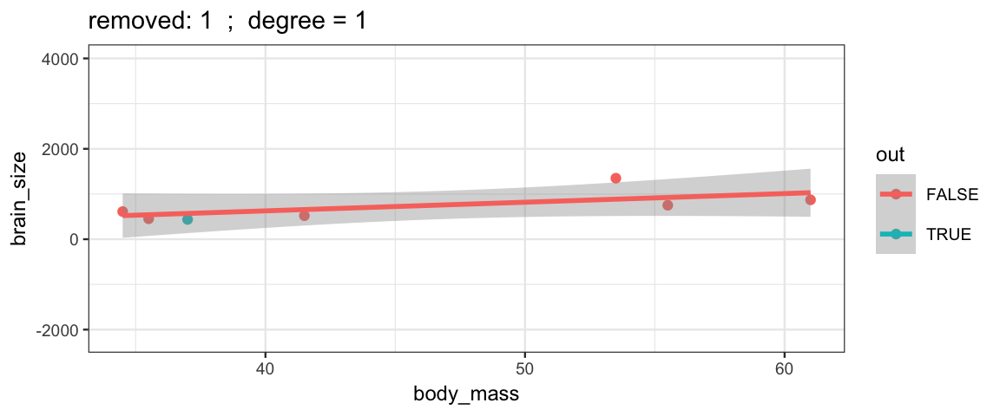 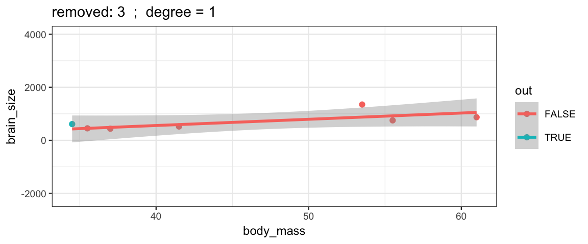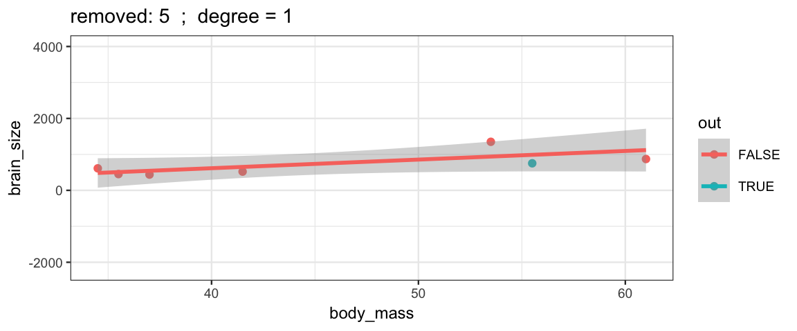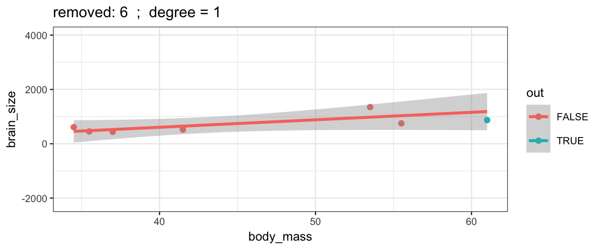
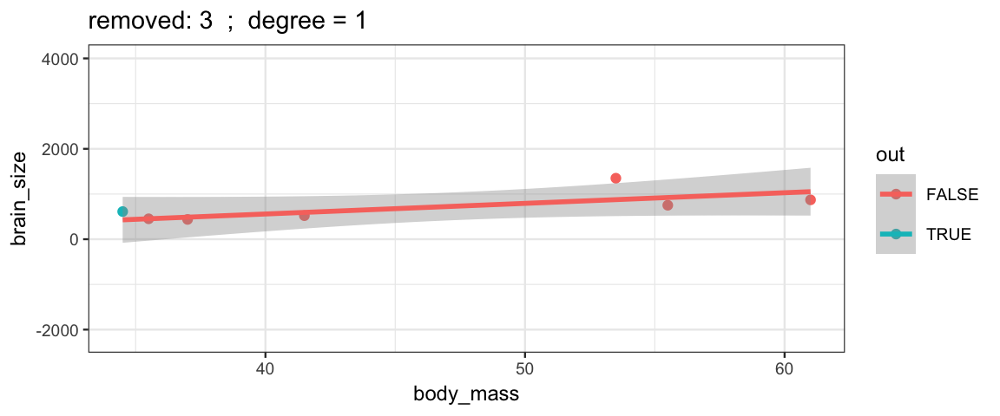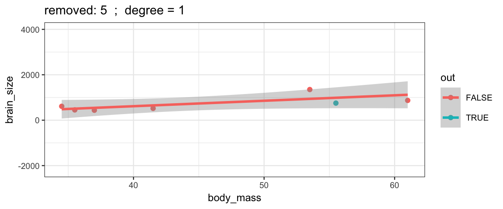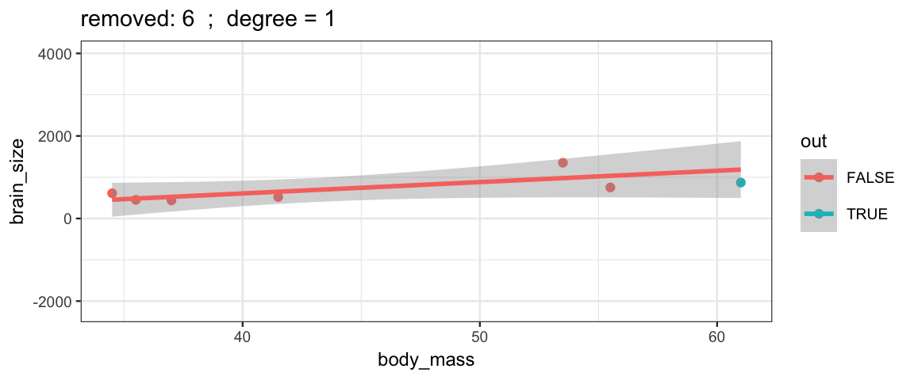 Cubic models and their uncertainties change more – they are more sensitive to the data.
Cubic models and their uncertainties change more – they are more sensitive to the data.
leave_one_out(1:nrow(Brains), degree = 3, ylim = c(-2200, 4000))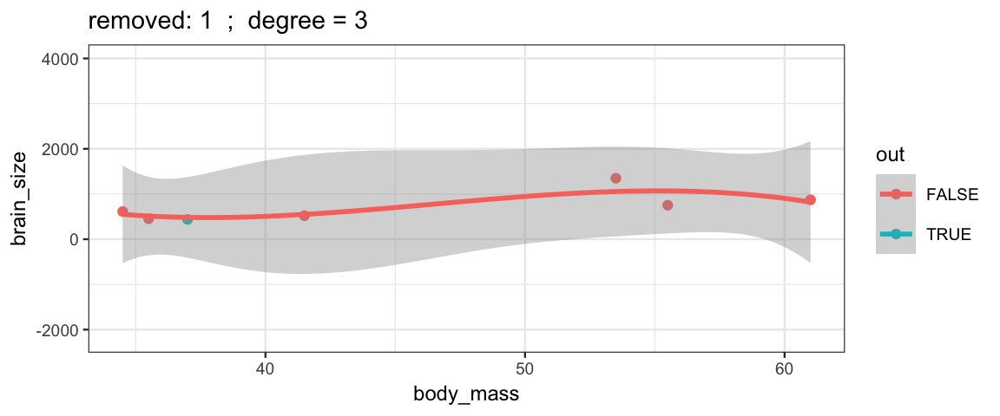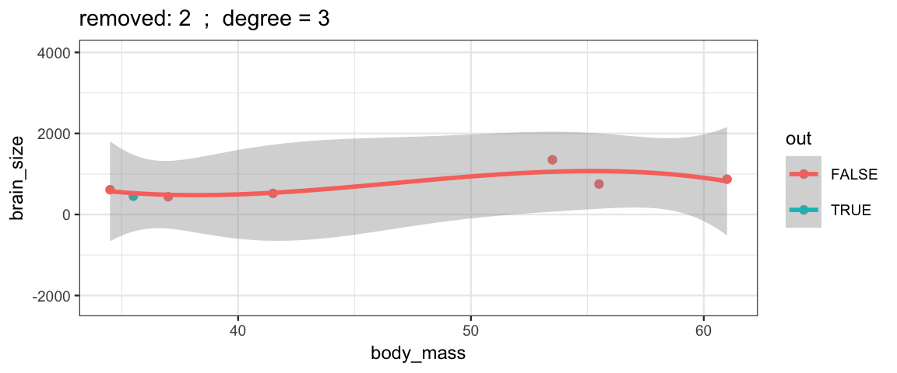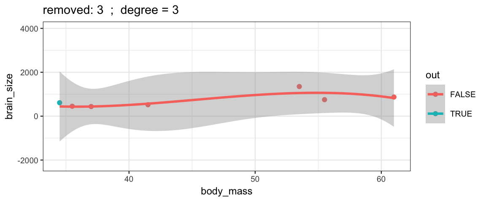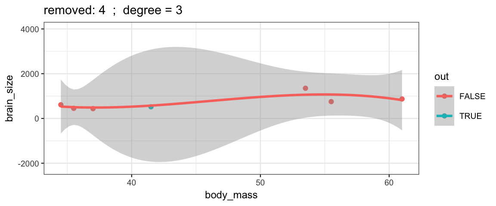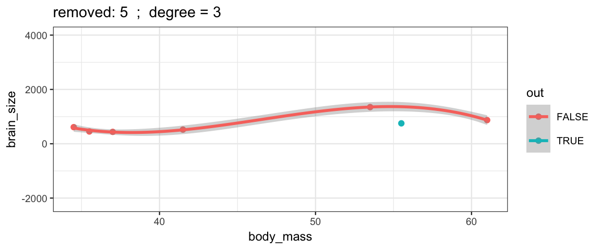
## Warning: Removed 2 rows containing missing values (geom_smooth).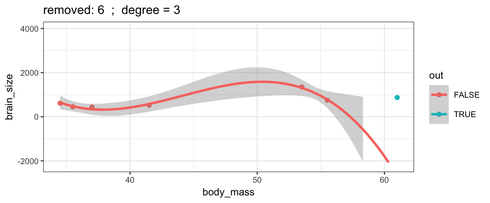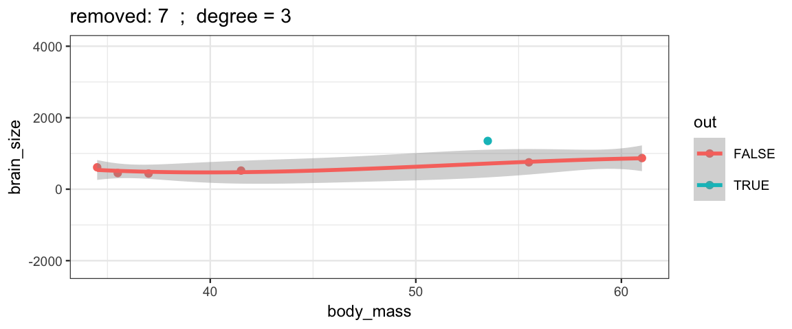
With a 5th degree polynomial (6 coefficients), the fit to the six data points
is “perfect”, but highly volitile.
The model has no uncertainty, but it is overfitting and overconfident.
The fit to the omitted point might not be very reliable.
leave_one_out(1:nrow(Brains), degree = 5, ylim = c(-2200, 4000))## Warning in qt((1 - level)/2, df): NaNs produced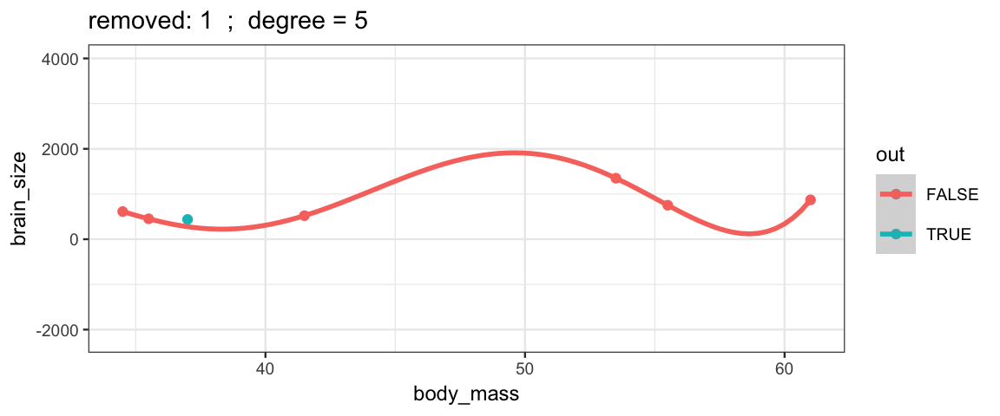
## Warning in qt((1 - level)/2, df): NaNs produced## Warning in qt((1 - level)/2, df): NaNs produced## Warning in qt((1 - level)/2, df): NaNs produced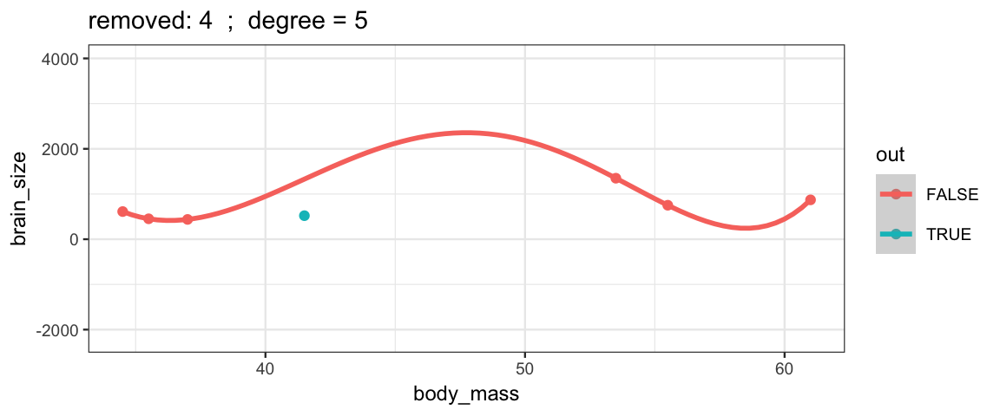
## Warning in qt((1 - level)/2, df): NaNs produced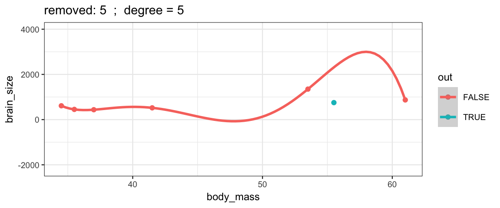
## Warning in qt((1 - level)/2, df): NaNs produced## Warning: Removed 10 rows containing missing values (geom_smooth).
## Warning in qt((1 - level)/2, df): NaNs produced
20.6 Exercises
The
CalvinBayes::Seaweeddata set (adapted from (Qian and Shen 2007)) records how quickly seaweed regenerates when in the presence of different types of grazers. Data were collected from eight different tidal areas of the Oregon coast. We want to predict the amount of seaweed from the two predictors: grazer type and tidal zone. The tidal zones are simply labeled A–H. The grazer type was more involved, with six levels: No grazers (None), small fish only (f), small and large fish (fF), limpets only (L), limpets and small fish (Lf), limpets and small fish and large fish (LfF). We would like to know the effects of the different types of grazers, and we would also like to know about the different zones.Create a plot that puts
SeaweedAmton the y-axis,Grazeron the x-axis, and usesZonefor faceting. Usegf_jitter()to avoid overplotting. Setheightandwidthto appropriate values so the plot is still easily interpretable.Fit a model with both predictors and their interaction assuming homogeneous variances in each group. Why would it not be a good idea to fit a model with heterogenous variances?
What is the effect of small fish across all the zones? Answer this question by setting up the following three contrasts: none versus small fish only; limpets only versus limpets and small fish; the average of none and limpets only versus the average of small fish only and limpets with small fish. Discuss the results.
What is the effect of limpets? There are several contrasts that can address this question, but be sure to include a contrast that compares all of the locations with limpets to all of the locations without limpets.
Set up a contrast to compare Zone A with Zone D. Briefly discuss the result.
Does the effect of limpets depend on whether the location is in zone A or D? Use an appropriate contrast to find out.
This problem investigates the synthetic data set
CalvinBayes::NonhomogVar.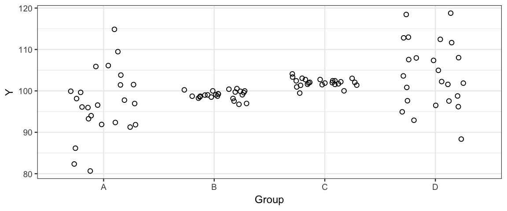
- From the plot, it is pretty clear that that variance is not the same across the groups. Fit two models.
model1_brm <- brm(Y ~ Group, data = NonhomogVar) model2_brm <- brm(bf(Y ~ Group, sigma ~ Group), data = NonhomogVar)What is the difference between these two models? (That is, what does
sigma ~ Groupdo?)Describe the priors for each model. (Use
prior_summary()if you are not sure.)Create the following plots:
A plot showing the posterior distributions of \(\sigma\) from model 1 and each of the \(\sigma_j\)’s from model 2. (Stack multiple calls to
gf_dens()on a single plot. Usecolororlinetypeorsizeor some combination of these to make them distinguishable. Note:color = ~"sigmaA", etc will give you a nice legend. This works forlinetypeandsizeas well.)A plot showing the posterior distribution of \(\sigma_A - \sigma_B\) in model 2.
A plot showing the posterior distribution of \(\sigma_B - \sigma_C\) in model 2.
A plot showing the posterior distribution of \(\frac{\sigma_A + \sigma_D}{2} - \frac{\sigma_B + \sigma_C}{2}\) in model 2.
Use each model to answer the following:
- Are the means of groups A and B different?
- Are the means of groups B and C different?
Explain why the models agree or disagree.
The original plot suggests that model 2 should be preferred over model 1. Compare the models using WAIC and LOOIC. Are these measures able to detect that model 2 is better than model 1?
Create a model like
fert4_brmbut usefamily = student(). This will add a parameter to your model. According to WAIC and LOO, which model should your prefer? (Note: the answer can be neither.)
References
Gelman, Andrew, Jessica Hwang, and Aki Vehtari. 2014. “Understanding Predictive Information Criteria for Bayesian Models.” Statistics and Computing 24 (6). Hingham, MA, USA: Kluwer Academic Publishers: 997–1016. https://doi.org/10.1007/s11222-013-9416-2.
Qian, Song S., and Zehao Shen. 2007. “ECOLOGICAL Applications of Multilevel Analysis of Variance.” Ecology 88 (10): 2489–95. https://doi.org/10.1890/06-2041.1.
In this case, the posterior and the likelihood are the same, and the noise distribution is normal. The proportionality can be confirmed by observing that the “interesting part” of \(\log p(y_i \mid \theta)\) is \((y_i - \hat y_i)^2\).↩
Technically, we should be computing the average using an integral instead of averaging over our posterior samples. But since this is a quantity we can’t compute anyway, I’ve expressed this in terms of an average over our posterior samples.↩